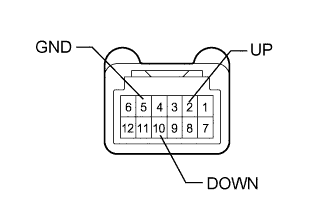
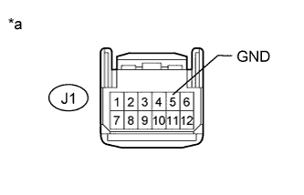
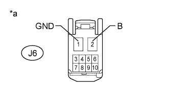

POWER WINDOW CONTROL SYSTEM > Front Passenger Side Power Window does not Operate with Front Passenger Side Power Window Switch |
| 1.CHECK FOR DTC (B2312) |
Check if DTC B2312 is output (Click here).
|
| ||||
| OK | |
| 2.READ VALUE USING INTELLIGENT TESTER (POWER WINDOW REGULATOR SWITCH RH) |
Use the Data List to check if the front power window regulator motor is functioning properly (Click here).
| Tester Display | Measurement Item/Range | Normal Condition | Diagnostic Note |
| P Door P/W Up SW | Front passenger side power window manual up signal / ON or OFF | ON: Front passenger side power window manual up switch operated OFF: Front passenger side power window regulator switch not operated | - |
| P Door P/W Down SW | Front passenger side power window manual down signal / ON or OFF | ON: Front passenger side power window manual down switch operated OFF: Front passenger side power window regulator switch not operated | - |
|
| ||||
| OK | |
| 3.PERFORM ACTIVE TEST USING INTELLIGENT TESTER (POWER WINDOW) |
Select the Active Test, use the intelligent tester to generate a control command, and then check that power window regulator motor operates (Click here).
| Tester Display | Test Part | Control Range | Diagnostic Note |
| Power Window | Passenger side power window | OFF/UP/DOWN | - |
|
| ||||
| OK | ||
| ||
| 4.INSPECT POWER WINDOW REGULATOR SWITCH ASSEMBLY RH |
|  |
Remove the power window regulator switch (Click here).
Measure the resistance according to the value(s) in the table below.
| Tester Connection | Switch Condition | Specified Condition |
| 2 (UP) - 5 (GND) | Manual up operation | Below 1 Ω |
| 10 (DOWN) - 5 (GND) | Manual down operation | Below 1 Ω |
| 2 (UP) - 5 (GND) | Not operated | 10 kΩ or higher |
| 10 (DOWN) - 5 (GND) | Not operated | 10 kΩ or higher |
|
| ||||
| OK | |
| 5.CHECK HARNESS AND CONNECTOR (POWER WINDOW REGULATOR SWITCH ASSEMBLY RH - BODY GROUND) |
|  |
Disconnect the J1 power window regulator switch connector.
Measure the resistance according to the value(s) in the table below.
| Tester Connection | Condition | Specified Condition |
| J1-5 (GND) - Body ground | Always | Below 1 Ω |
| *a | Front view of wire harness connector (to Power Window Regulator Switch Assembly RH) |
|
| ||||
| OK | |
| 6.CHECK HARNESS AND CONNECTOR (POWER WINDOW REGULATOR SWITCH ASSEMBLY RH - FRONT POWER WINDOW REGULATOR MOTOR ASSEMBLY RH) |
Disconnect the J1 power window regulator switch connector.
Disconnect the J6 power window regulator motor connector.
Measure the resistance according to the value(s) in the table below.
| Tester Connection | Condition | Specified Condition |
| J1-2 (UP) - J6-10 (UP) | Always | Below 1 Ω |
| J1-10 (DOWN) - J6-7 (DOWN) | Always | Below 1 Ω |
| J1-2 (UP) - Body ground | Always | 10 kΩ or higher |
| J1-10 (DOWN) - Body ground | Always | 10 kΩ or higher |
|
| ||||
| OK | |
| 7.CHECK HARNESS AND CONNECTOR (FRONT POWER WINDOW REGULATOR MOTOR ASSEMBLY RH - BATTERY AND BODY GROUND) |
|  |
Disconnect the J6 power window regulator motor connector.
Measure the voltage according to the value(s) in the table below.
| Tester Connection | Condition | Specified Condition |
| J6-2 (B) - Body ground | Always | 11 to 14 V |
Measure the resistance according to the value(s) in the table below.
| Tester Connection | Condition | Specified Condition |
| J6-1 (GND) - Body ground | Always | Below 1 Ω |
| *a | Front view of wire harness connector (to Front Power Window Regulator Motor Assembly RH) |
|
| ||||
| OK | ||
| ||